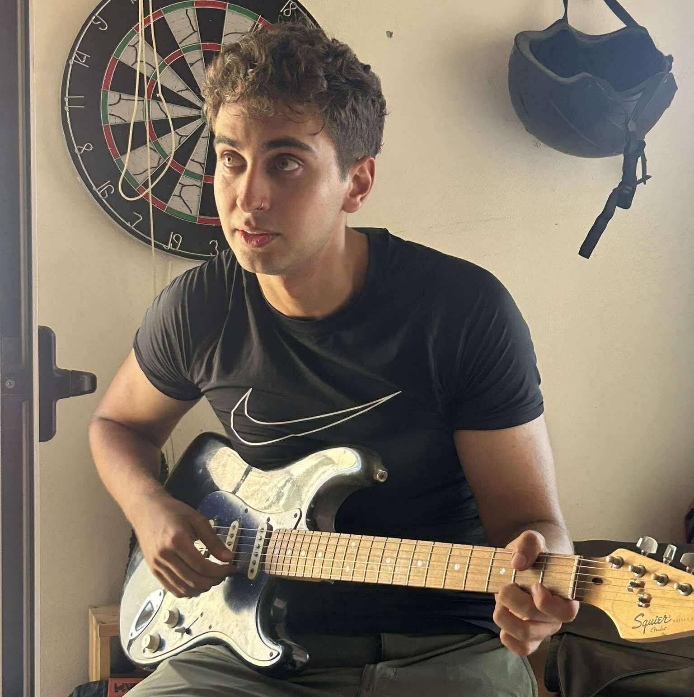

# Georgios Kousis Tsampazis
📍 Heraklion, Crete, Greece
✉️ georgekousis6@gmail.com
🔗 LinkedIn: https://www.linkedin.com/in/george-kousis-tsampazis
💻 GitHub: https://github.com/geokousis
---
Motivated Bioinformatics Master’s student with a strong background in bioinformatics, biostatistics, and machine learning. Proven experience in academic research, laboratory environments, and data analysis. Interested in computational genomics, evolutionary bioinformatics, and translational cancer research.
---
## Education
- University of Crete, MSc in Bioinformatics (Sept 2024 – Present)
- University of Crete, BSc in Biology (Sept 2020 – June 2024)
- Grade: 8.56/10 (Excellent)
---
## Thesis
- MSc Thesis, University of Crete (Mar 2025 – Present)
Finding Conserved Motifs in Emerging Viral Genomes for Primer Design in Molecular Diagnostics
Supervisors: Prof. Electra Gizeli & Assoc. Prof. Pavlos Pavlidis
- BSc Thesis, University of Crete (Nov 2023 – June 2024)
Identification of samples and annotation of informative SNPs using machine learning methods in NGS data
Supervisor: Assoc. Prof. Pavlos Pavlidis
Grade: 10/10 (Excellent)
---
## Research Experience
- Research Associate, University of Crete (Sept 2024 – Present)
- Finding conserved motifs in emerging viral genomes for primer design
- Detection and analysis of key mutations in ILCEM tumor samples
- Project on indigenous grape varieties for winemaking (EU – NextGenerationEU)
- Member of EvoLab, University of Crete (May 2023 – Present)
- Tackling bioinformatics challenges under Prof. Pavlos Pavlidis
- Member of The Gizeli Group, University of Crete (Mar 2025 – Present)
- Developing bioinformatics pipelines for primer design and viral genome analysis
---
## Publications, Posters & Seminars
- Submitted Manuscript: Genetic affinities between an ancient Greek colony and its metropolis: the case of Amvrakia in western Greece (Sept 2024)
Authors: Psonis et al.
- Manuscripts in Preparation
- A Data-Driven Framework for ddRAD Enzyme Selection and Genomic Marker Discovery in Grapevine Cultivars (Present)
- Invasive lobular carcinoma with extracellular mucin (ILCEM) (Present)
- Oral Presentations
- Analysing ddRAD Sequences with Machine Learning for Vitis Cultivar Identification – EMBO 2025 Satellite Workshop on Biodiversity Genomics (Present)
- Identification of Vitis Cultivars Using Machine Learning-Selected SNPs from NGS Data – HAICTA 2024 (Oct 2024)
- Poster
- Good-Wines: Integrative Analysis of Vitis NGS Data to Optimize Cultivar Identification – legend2024 (May 2024)
- Participant
- Molecular Analysis for Precision Cancer Therapy (Feb 2025)
---
## Projects
- Genomic Profiling of ILCEM Cancer Samples
- Developed a pipeline for WES data clustering and mutation identification
- Tools: Bash, Python, R, Dragen-GATK, Funcotator, Mutect2, CNVkit, bcftools, BWA-MEME, fastp, fastQC, multiQC, samtools
- Good Wines
- Identification of Vitis grape varieties using Machine Learning
- Tools: Python, Bash, R, bcftools, Dragen-GATK, BWA-MEME, Picard, samtools, fastp, fastQC, multiQC, Stacks, ipyrad, Random Forest
- Flower Child
- Reanalysis of Petunia axillaris ChIP-Seq and RNA-Seq data
- Tools: STAR, MACS2, Bedtools, Bash, R, Python, Trimmomatic, fastQC, multiQC, Galaxy Server
- Evolabics Pipes
- Developed NGS pipelines emphasizing usability and generalizability
- Tools: Bash, Python, CWL, Snakemake, CWL in Toil
- Evolution of Music
- Assessment of music similarity across international songs
- Tools: Python, Bash, MIDICSV
- SIR Models Extensions
- Review work during Mathematical Biology course
- Tools: R
- Ecological Risk Assessment & Management
- Review work during Applied Ecology & Management of Terrestrial Ecosystems course
---
## Additional Experience & Awards
- Excellence in Academic Achievement: Graduated with honors (University of Crete, 2020–2024)
- Excellence in Academic Achievement: Secondary education
---
## Skills
### Dry Lab
- Bioinformatics Tools: samtools, bcftools, Dragen-GATK, Mutect, STAR, Stacks, ipyrad, MACS2, Picard, BWA, Blast, Trimmomatic, Cutadapt, fastp, fastQC, multiQC, annotation tools
- Programming Languages: Python, R, Bash, HTML
- Server Management: GNU/Linux, Galaxy server
- Scripting & Algorithms: ML (clustering/classification), Bash/Python scripting
- Software: MS Office, Adobe Creative Suite, 3D Modeling (C4D, Blender)
- Other: Statistics, CWL, Snakemake, Git, GitHub, UML, LaTeX, Markdown
### Wet Lab
- Techniques: Plating, Streaking, PCR, ELISA, DNA hybridization, TLC, Plant in vitro culture, Basic surgical anatomy
- Strong protocol application and lab notebook skills
---
## Languages
- English: C2 Proficiency (Michigan State University)
- French: DELF A2
---
## Extracurricular Activities
- Sports: Long-distance running (Crete Half Marathon), Taekwon-Do ITF (Black Belt), Rock climbing
- Volunteer Work: TEDx University of Crete (Speaker Coach), Karteros Run, Tree Planting
- Hobbies: Guitar learning and teaching
---
## Additional Information
- Driver’s License Holder
- Strong public presentation & communication skills